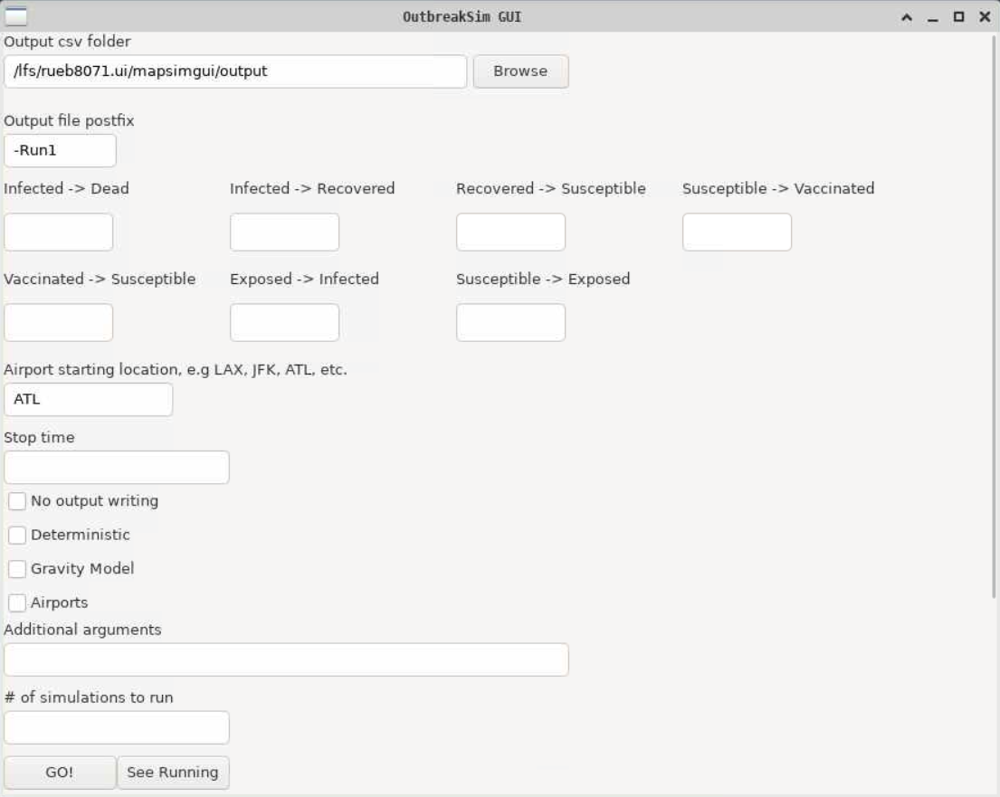

On Getting a GUI Program to Submit Jobs on a Supercomputer
After making the program work on the command line and accept arguments, it was time to create a GUI interface to let people more easily interact with the program and run jobs. The actual GUI program runs in a singularity container with wxLua, a Lua binding to wxWidgets.

The program has a number of text inputs and will spit out a slurm file like this:
#!/bin/bash
#SBATCH -p tiny -a 1-5
cd $SLURM_SUBMIT_DIR
./OutbreakSimulator --params id=0.5 -opost -Run1-$SLURM_ARRAY_TASK_ID -startat ATL --stop 5 -airports And then I ran into a problem, how do I submit this file to the job system while running in a container? The container doesn’t have access to the host system’s environment, this is after all kind of the point. So how do we get access to the job system from here?
One of the interesting features of singularity is that it automatically binds the user’s home directory to the container’s environment. So the container can read file from the user’s home directory, and the container can write files there as well. This opens up a very nice way to communicate between the two environments.
The basic way the communication works is as follows:
- The user open the GUI program using the provided shell script
- The shell script also opens a seperate program that runs in the background on the host system
- When the GUI program needs to do something on the host, it writes to a file somehwere which we’ll call
input - When the GUI program is done writing, it creates a file called
inputset - The program on the host waits for the inputset file to be created, and when it is, will run the contents of
inputas Lua code using the Lua functiondofile - After the code is ran on the host, the program will delete the
inputsetfile to mark that it is ready for new input
In this way, the GUI program can specify any artbitrary code to run on the host. The only thing it does with this power is access the sbatch and squeue command to execute and read the status of the job queue respectively.
In the end, it was quite a simple program to get working. The GUI library is relatively easy to use, and the communication between the host and container wasn’t hard to implement; however, it was a real noodle scratcher to get some pieces of this working.